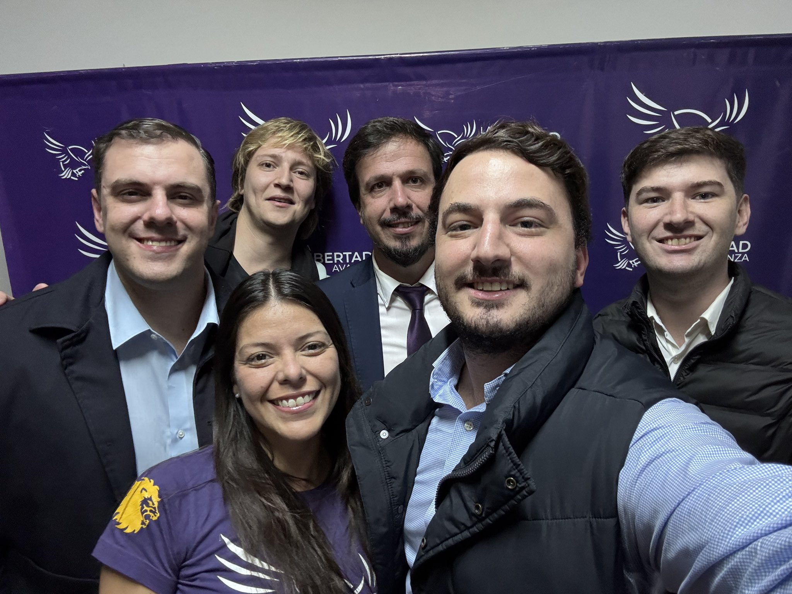

La Libertad Avanza logra histórica victoria en Salta Capital y desplaza al oficialismo de Sáenz
Política | 11 de mayo del 2025 — En las elecciones legislativas del 11 de mayo de 2025, La Libertad Avanza (LLA), el espacio liderado a nivel nacional por el presidente Javier Milei, obtuvo un triunfo contundente en la provincia de Salta, especialmente en el departamento Capital, el distrito con mayor peso electoral de la provincia. Con el 90% de las mesas escrutadas, LLA alcanzó el 35% de los votos en la categoría de diputados provinciales, superando por cinco puntos al frente oficialista encabezado por el gobernador Gustavo Sáenz.
Este resultado marca un cambio significativo en el escenario político local, evidenciando una marcada caída de las estructuras partidarias tradicionales en la región. El kirchnerismo y el PRO se ubicaron tercero y sexto respectivamente, reflejando una pérdida de apoyo en comparación con elecciones anteriores.
Uno de los triunfos más resonantes fue el de Roque Cornejo, candidato de La Libertad Avanza al Senado por Capital, quien lideró un desempeño destacado que lo posiciona como una de las figuras opositoras emergentes más importantes en el norte argentino.
A pesar del revés en Capital, el oficialismo logró retener la mayoría de las bancas a nivel provincial, lo que le permitirá sostener cierta gobernabilidad. Sin embargo, el ascenso de LLA supone un nuevo equilibrio de fuerzas en la Legislatura y anticipa una oposición mucho más activa y organizada en los próximos años.
Durante la jornada, referentes libertarios denunciaron irregularidades en el desarrollo del acto electoral, mencionando cortes de luz en escuelas, padrones desactualizados y hechos de clientelismo. De todos modos, el comicio se llevó adelante con normalidad en la mayoría de los casos y hubo una participación ciudadana cercana al 60%.
Este nuevo avance electoral confirma la consolidación de La Libertad Avanza en Salta, donde ya había obtenido un contundente 58% en el balotaje presidencial de 2023. El resultado fortalece al oficialismo nacional en un distrito estratégico del NOA y le da impulso de cara a las elecciones legislativas nacionales de octubre de 2025, donde se definirán cargos clave en el Congreso.